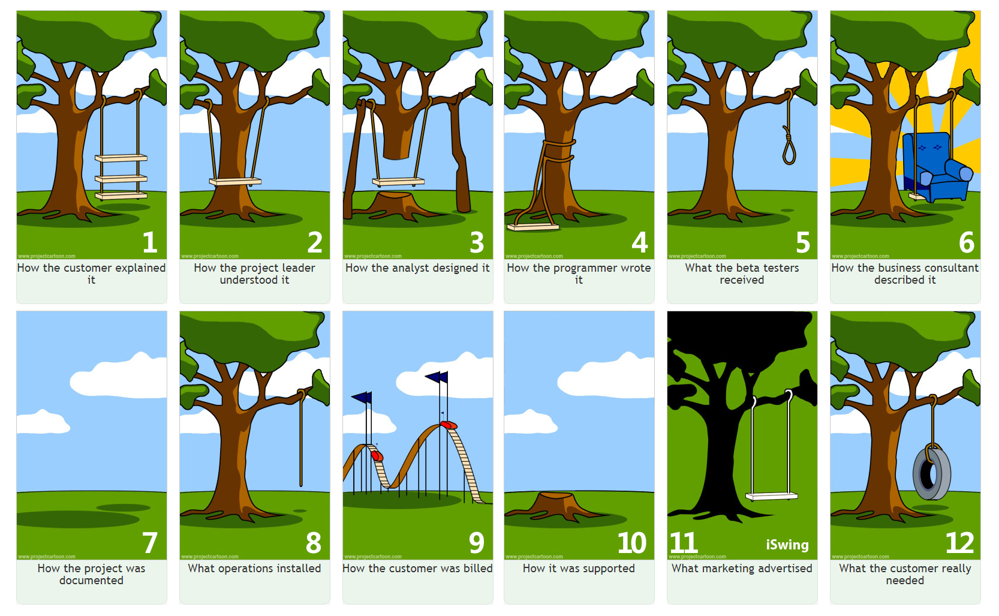

Not only coding, I also have a understanding in agile methodology, SDLC life cycle
My coursework has provided insights into the Software Development Life Cycle (SDLC) and its various phases, from requirement analysis to deployment and maintenance. Understanding the SDLC has equipped me with a holistic perspective on software development, enabling me to contribute effectively to project success.
Furthermore, I recognize the importance of soft skills in the tech industry. Effective communication, problem-solving, and adaptability are just a few of the soft skills I've honed over time. These skills not only facilitate smooth collaboration within a team but also enhance my ability to understand and meet the needs of end-users.
This is a funny picture I found in learning process